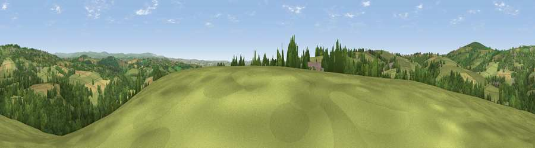

Viewpoint near St Dominic
#12122 in England · top 21% of its area beats it · near St Dominic · path 224 mWhere it is
The exact computed spot (SX 40425 67975). Click the marker for map links.
Public access: the nearest public right of way is about 224 m away — the final stretch may cross private land. Computed from Natural England's CRoW access layer and OpenStreetMap rights of way — not the legal definitive map. Always verify locally.
The view, rendered

A 360° render of this exact spot computed from the terrain model, tree cover and land cover — summer colours, afternoon light, calibrated against photographs of famous viewpoints. Real trees, hedges and buildings will differ in detail.
The panorama
Grey silhouette: terrain skyline in each direction (720 bearings, Earth curvature and refraction included). Dashed green: skyline with trees (+15 m) and buildings (+8 m) as obstacles. Blue strip: how far the ground is visible on each bearing.
Where the view opens
Wedge length = distance to the farthest visible ground on that bearing (vegetation-aware). Rings at 10, 25 and 50 km.
What fills the view
56% grassland · 33% woodland · 10% cropland · 2% built-up
Angular shares of the visible panorama (visual magnitude), not map area. Landscape diversity 0.43 (0–1 Shannon).
Key numbers
More beautiful places nearby
The staircase of upgrades: each row has a higher view potential than everything closer. Driving times are estimates from straight-line distance, calibrated against real road routing — check an actual route before setting out.
| Place | Direction | Drive | Score |
|---|---|---|---|
| Viewpoint near St Dominic | SSW · 1 km | ~4 min | 60.6 |
| Viewpoint near St Mellion | WSW · 2 km | ~6 min | 62.4 |
| Viewpoint near St Mellion | S · 3 km | ~8 min | 67.3 |
| Viewpoint near St Ann's Chapel | N · 3 km | ~8 min | 73.5 |
| Hingston Down | N · 3 km | ~8 min | 78.3 |
| Kit Hill | NW · 4 km | ~10 min | 80.3 |
| Viewpoint near Crafthole | SSW · 15 km | ~26 min | 80.5 |
| Viewpoint near Crafthole | SSW · 15 km | ~27 min | 81.0 |
50.48980, -4.25095 · source: screening · position refined by local search. Computed location — check access rights before visiting.